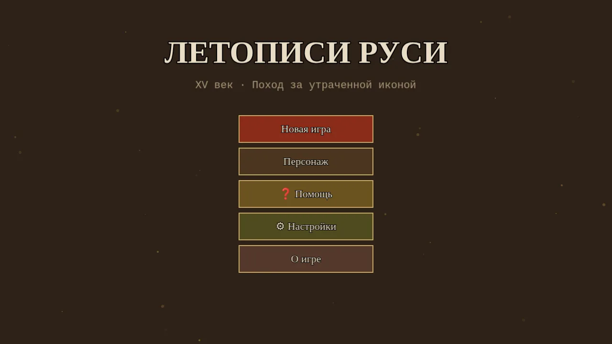
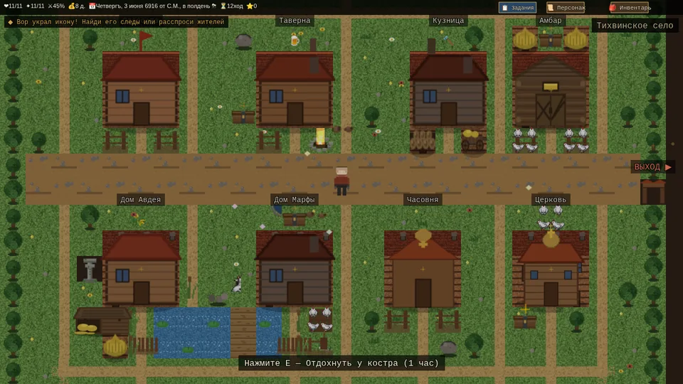
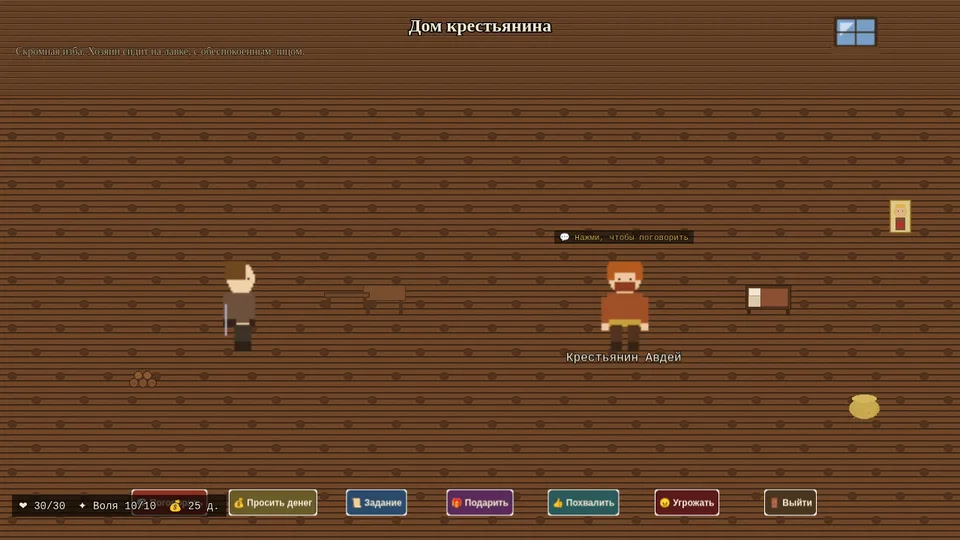
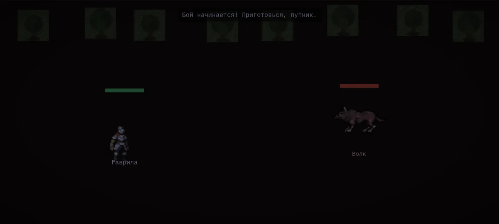
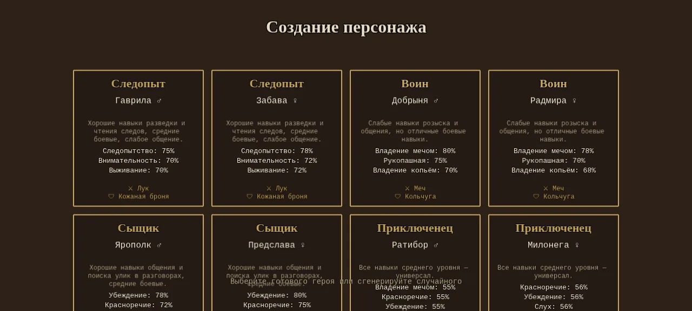
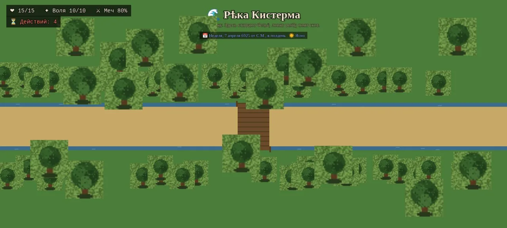
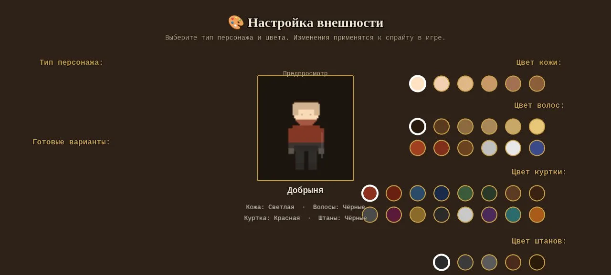
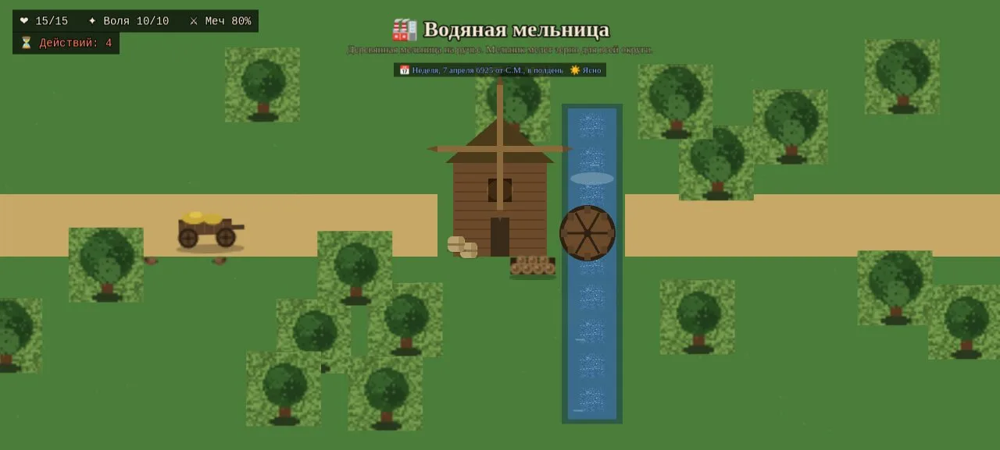
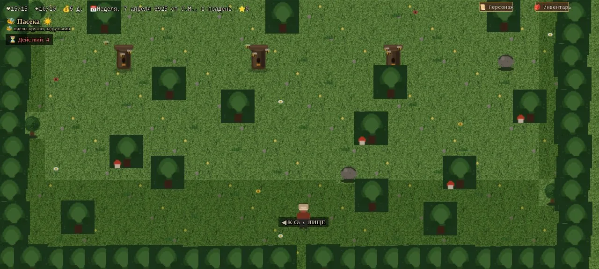

The Chronicles of Ruthenia — Летописи Руси XV века

Funds will go toward AI testing hardware, knowledge-base content and development. Choose a convenient method:
The Chronicles of Ruthenia is a unique project in which the Godot game engine (desktop version) handles all the math: dice rolls, damage calculation, hit chances, skill and survival checks. Meanwhile an AI Narrator (a local llama model or a cloud LLM) acts as an endlessly creative Game Master, describing the world, dialogue and consequences of your actions. The browser demo on this page is built with Phaser 3.
But most importantly — strict historical authenticity. A RAG knowledge base compiled from hundreds of historical books and articles keeps the neural network from hallucinating and inventing facts. Everything that happens in the game is checked for historical accuracy.
A multi-source Retrieval-Augmented Generation system filled with real historical sources on 15th-century Rus' and world history. The AI does not invent — it selects from verified facts.
The mathematically rigorous Basic Roleplaying system, carefully adapted to the 15th-century Rus' setting, with realistic odds, skills and combat mechanics.
A local neural network on llama.cpp server, or any cloud model via an OpenAI-compatible API. Narrative quality depends on the chosen model and its weights.
Graphical combat in 2.5D isometric view or a text mode. Historically accurate weapons, armour and clothing. You can die from a single well-placed blow to a vulnerable spot.
Every world event is reflected in the game: rumours from merchants, news from foreign guests, political shifts. Day and night, seasons and weather change. Realistic roads and distances.
Rolling Summary + State Injection around the model's context window. No context overflow — the AI always remembers the key events of your story.
Key events of the era — from Edigu's invasion to the end of Ivan III's reign. The “Quest for the Lost Icon” scenario is woven into this chronicle: rumours of great battles reach the village with the trade caravans.
The age of “gathering of the Russian lands” around the Principality of Moscow, of feudal wars and of casting off the Horde yoke. Three grand princes define the epoch.
The game accounts for real historical events of 15th-century Rus' and all major world events. Rumours from merchants, tales of foreign guests, political changes — all of it is reflected in the game world, and none of it can be missed.
The game uses realistic historical terrain maps of 14th–16th century Rus'. Below is a map of the village's game neighbourhood: click a marker to learn about the area.
The mathematically rigorous BRP system (d100). All rolls, damage, skills and checks are computed by the Godot engine. The neural network only describes the outcome.
Damage ≥ ½ HP triggers a d100 table with stat loss by body zone. Knockout “take alive” — a captive yields ransom under the 1497 Sudebnik.
Tap the die
The chosen local model is downloaded from an open repository on first launch.
Connect any cloud models: OpenAI, Anthropic, Mistral, local servers and more.
The official Basic Roleplaying system — a d100 roleplaying mechanic proven over decades.
Godot computes rolls and damage; the neural network describes events and carries dialogue.
The RAG base keeps the AI from inventing — only verified historical data.
Works offline after downloading the model from Hugging Face.
Connect any LLMs via an OpenAI-compatible API key.
Rolling Summary + State Injection around the context window.
At every stage: from character creation to NPC actions.
Real weapons and armour. Death from a single blow to a vulnerable spot.
Graphical 2.5D isometric view or the text mode of classic tabletop RPGs.
The knowledge base is compiled from several hundred historical sources.
The Basic Roleplaying Universal Game Engine SRD system.
All major historical events are reflected in the game world.
Events arrive through merchants, guests and other sources.
Rest, food, thirst, horse fodder, illnesses, poisoning.
Distances between towns match historical maps.
Seasons and weather affect gameplay.
Local and global reputation, the attitude of those around you.
A kind of “Rupedia” — every milestone of 15th-century Russian and world history.
A full log of events, dialogue and battles. Export to a text file.
Realistic maps of 14th–16th century Rus' and its surroundings.
A local neural network server with an OpenAI-compatible API over HTTP.
15th-century Rus' awaits its hero. Whether you become a boyar, a warrior, a merchant or a wanderer — the story is written by every decision you make.
Available for PC • Local neural network or cloud API • BRP d100 • Godot Engine
A short promo video about The Chronicles of Ruthenia — concept, atmosphere, gameplay.
Frames from the browser demo — the village, interiors, combat, character creation and locations.









Try the BRP d100 combat system right in your browser! Guide a traveller through a village of 15th-century Rus', talk to NPCs and face a bandit in combat.
The browser demo is built on the Phaser 3 engine. The main game is developed on Godot Engine. Note: in-game text is currently in Russian; full English localization is planned.
The game opens in a separate window. Controls: WASD/arrows — move, E — interact, ESC — exit.
Size: 1280×720. Fullscreen mode (F11) recommended.
Funds will go toward AI testing hardware, knowledge-base content and development.